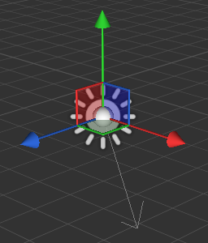

ディレクショナル ライト
ディレクショナル ライトは、1 つの方向から均一に照明します。太陽のような巨大で遠方にある光源をシミュレートするためによく使用されます。既定では、Stride で作成する新しいシーンには 1 つのディレクショナル ライトが含まれます。
Game Studio では、ディレクショナル ライトは次のアイコンで示されます。

ディレクショナル ライトを選択すると、ギズモにライトの主要な方向が表示されます。

プロパティ
| プロパティ | 説明 |
|---|---|
| Color | ディレクショナル ライトの色です。現在、このライトは RGB カラーをサポートしています。将来のバージョンの Stride では、温度カラーもサポートされます。 |
| Shadow | 後の「シャドウのプロパティ」を参照してください。 |
| Intensity | ライトの強度です。シェーダーへの送信前に、色にこの値が乗算されます。現在、この値には単位がないことに注意してください。これは、将来のバージョンでは変更されます。 |
| Culling Mask | このライトによって影響を受けるエンティティ グループを定義します。既定では、すべてのグループが影響を受けます。 |
ディレクショナル ライトのシャドウ
ポイント ライトやスポット ライトと同様に、ディレクショナル ライトではシャドウがキャストされます。ただし、ディレクショナル ライトによってキャストされるシャドウは大きなビュー範囲に広がる場合があるので、現実感を高めるには特別な処理が必要です。
ディレクショナル ライトでは、カスケード シャドウ マッピングと呼ばれるもう 1 つの手法が使用されます。この手法では、ライトからテクスチャへの視点から遮蔽オブジェクトの深度をレンダリングした後、遮蔽物の情報を考慮してシーンがレンダリングされます。
この方法では、カメラの視点から異なるセクションまたは異なる解像度の「カスケード」までの深度範囲がスライスされます。カメラに近いカスケードほど、その解像度は高くなり、シャドウの解像度も高くなります。
つまり、カメラに近いシャドウほど品質がよくなります。これは、カメラに近いシャドウほどメモリを多く消費し、遠いシャドウはメモリ消費が少ないことを意味します。
1 個、2 個、または 4 個のカスケードを使用できます。使用するカスケードが多いほど節約できるメモリも多くなりますが、距離全体でシャドウの解像度が低下します。
シャドウ カスケードを確認する
シーン エディターでシャドウ カスケードを確認するには、［Property grid］で［Shadow］プロパティの［Debug］オプションを有効にします。
| カスケード デバッグ オフ | カスケード デバッグ オン |
|---|---|
 |
異なる色は、各距離範囲のカスケードを示します (緑: 0、青: 1、紫: 2、赤: 3)。
ディレクショナル ライトのシャドウのプロパティ
| プロパティ | 説明 |
|---|---|
| Filter | フィルターを適用すると、ハード シャドウではなくソフト シャドウが生成されます。現在実装されている技法は PCF (Percentage Closer Filtering) です。将来のバージョンでは他の技法も実装されます。 |
| Size | シャドウ マップ テクスチャのサイズです。ディレクショナル ライトは短い範囲のライトより視覚的な影響が大きいので、ディレクショナル ライトでの既定値は x1 です。 |
| Cascade Count | ライトによってカバーされる深度の範囲をスライスするために使用されるカスケードの数です。値は 1、2、4 カスケードです。一般的なシーンでは 4 カスケードを使用します。 |
| Stabilization Mode | シャドウ マップのちらつきを減らすために使用される手法です。ちらつきの原因は、ライトの視点からのテクセルが、カメラの視点からのテクセルより大きな領域をカバーしているときに、シャドウ マップによって行われる可能性のあるエイリアシングです。 ［Projection Snapping］は、ライトの投影マトリックスを、シャドウ マップ テクスチャの解像度に依存するテクセルにスナップすることを試みます ［View Snapping］は、ライトのビュー マトリックスのターゲットをスナップすることを試みます (カメラ ビュー カスケード錐台の中心) 投影スナップとビュー スナップは、どちらもより大きい領域をカバーするようにシャドウ マトリックスを強制し、シャドウ マップ テクスチャのエイリアシングを増やします。深度範囲カメラの使用を自動に設定すると、安定化モードが無視されることに注意してください |
| Depth Range | カメラの視点から見える深度範囲を計算する方法です。この指定は、近いカスケードと遠いカスケードの分割方法に直接影響します |
| Automatic | 有効にすると、可視深度範囲は実際の深度バッファーから読み戻されて、最小および最大の視野距離が自動的に計算されます。 |
| Manual Min Distance | 最小深度 (メートル単位) です。自動モードが無効になっているときに有効です。 |
| Manual Max Distance | 最大深度 (メートル単位) です。自動モードが無効になっているときに有効です。 |
| Blend Cascades | カスケード間の遷移を滑らかにします。 |
| Partition Mode | カスケード分割距離の決定方法です。 ［Manual］: 分割は、可視深度範囲のパーセンテージを指定することで、カスケードごとに手動で定義されます。カスケードの値が 0.1 ということは、カスケードが距離 0.1 * (VisibleDepthMax - VisibleDepthMin) でレンダリングされることを意味します ［Logarithmic］: 分割は対数尺度を使用して自動的に計算されます PSSM 計数を使用することで、純粋な対数尺度 (0.0f) から純粋な均等尺度 (1.0f) までを表すことができます |
| Bias Parameters | シャドウ マップ技法の一部のアーティファクトを防ぐために使用されます |
| Depth Bias | シャドウ アクネ現象を防ぐためにサンプリング深度に追加する深度の量です |
| Normal Offset Scale | 法線方向の深度バイアスに乗算する係数です |
| Debug | シャドウ マップ カスケードをシーン エディターに表示します |